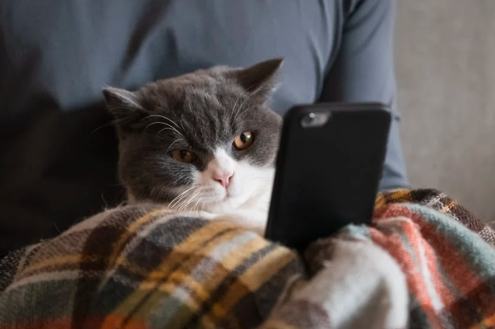

Oi, Cadu!
Esse é o manual de sobrevivência da casa
Vou colocar algumas informações aqui sobre o que fazer, e outras que podem te ajudar caso precise de algo. Coloquei isso tudo em um site porque fica mais fácil de tu ver de onde quiser.

Instruções sobre o que fazer
- Dar comida pros gatos 3x ao dia (pode ser uma de manhã, uma no almoço e uma à noite. Se tu não voltar no almoço, faz uma depois do trabalho e outra antes de dormir).
- Verificar água deles 1x por dia.
- Dica sobre a água: se o Jacob ou Edward te encararem enquanto tu tá no banheiro, às vezes eles querem beber água da torneira. Pode abrir e deixar eles de boa ali.
- Limpar a caixa de areia 1x por dia.
Antes de dormir, verificar se trancou:
- Trava do portão de fora (sobre a luz da garagem: ela sempre fica acesa, porque o interruptor pega a luz e a câmera. Sempre deixar acesa pra câmera funcionar. Posso te mandar o link de acesso, é só pedir no zap).
- Portão branco
- Trava da porta de alumínio que fica do lado dos gatos (a trava da parte de cima da porta, sem ela, a porta abre magicamente de acordo com o poder mental dos gatos, eu nunca entendi o que acontece).
- Porta da sala (os gatos fazem bagunça se ficar aberta e tem muito fio que eles podem resolver brincar).
- Lembrar que a porta do banheiro de fora sempre tem que ficar aberta por causa da areia deles.
- Janela do gatil:
- Pode deixar aberta durante o dia se não estiver chovendo ou molhado lá fora.
- Durante a noite, sempre deixar fechada.
- Se os lixos ficarem cheios, o caminhão passa na segunta, quarta e sexta. Tirar durante a noite
Um tópico inteiro dedicado ao Jacob, que é muito loko
Antes de dormir, eu sempre coloco um colchão contra a porta de alumínio.
Caso eu esqueça de colocar, o Jacob “arranha” a porta porque quer atenção e ele não entende que humanos precisam dormir. Caso isso aconteça, ou ele comece a miar (porque percebeu que não dá pra fazer barulho na porta), não reage. Se tu reagir, ele vai entender que toda vez que faz isso, recebe uma “recompensa” e daí ele vai querer ficar fazendo isso pra sempre.
Agora sobre coisas que podem te ajudar na casa:
- Se tiver muito frio, a gente tem um aquecedor. Pode usar, principalmente pra tomar banho. Só colocar uns minutinhos antes e sempre lembrar de desligar antes de entrar no banho, porque é algo que consome bastante energia e com o chuveiro ligado ao mesmo tempo pode desarmar o disjuntor. Se for usar antes de dormir, liga e lembra de desligar antes de cair no sono, também porque gasta bastante energia e pode aquecer muito o quarto durante a noite.
- Pode comer qualquer coisa que esteja na casa, preparar qualquer coisa que quiser, ficar à vontade pra usar os utensílios e qualquer coisa que tu precisar.
- As portas do quarto e do closet foram tiradas porque a gente tá lidando com cupins. Então removemos as portas e ainda não instalamos outras. Caso tu queira que fique mais quentinho no quarto, fecha a porta camarão e deixa uma frestinha (pros gatos não ficarem enchendo o teu saco pra abrir).
- Pode usar o projetor também, usa com o carregador com plug branco, porque o preto estragou. É bem legal de colocar ele lá fora na parede que da pro banheiro, a tela fica grandona.
- No armario branco tem vários snacks, pode dalhe.
- Se quiser usar o switch também, pode ficar a vontade
Se acontecer de algum gato fugir:
Não se desespera. Na maioria das vezes eles voltam.
Se for na área da piscina, tenta não deixar eles subirem as escadas. Age numa boa, como se tu estivesse indo brincar com eles lá fora. E quando deixarem tu chegar pertinho, cata eles.
Caso eles subam na escada, age com tranquilidade também. Eles vão subir no telhado e talvez sumir de vista. Pega um sachê (deixei no armário branco do lado do filtro de água) e vai despejando em algum lugar que tu vê que o cheiro vai meio que se espalhar no ar (no chão, em cima da muretinha, etc). E, provavelmente, eventualmente eles vão voltar. Essas situações são bem raras, mas achei bom deixar aqui porque às vezes eles são safados.
Beleza, é isso. Valeu mano, por ficar aí com os gatinhos e cuidar deles. Fica à vontade, e se tiver alguma situação ou algo que tu precise de ajuda (desde não saber onde fica algo até uma emergência) não pensa duas vezes antes de me chamar ou falar ali no grupo.